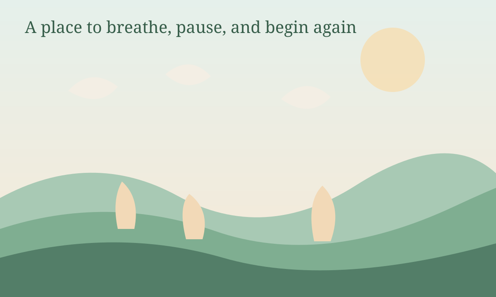
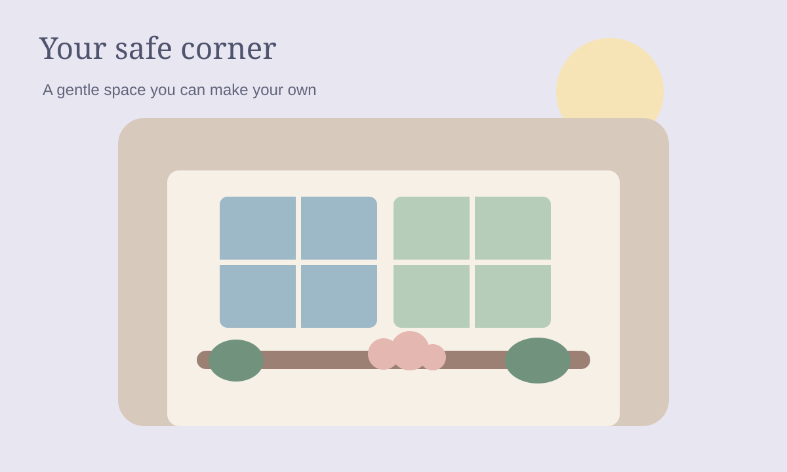
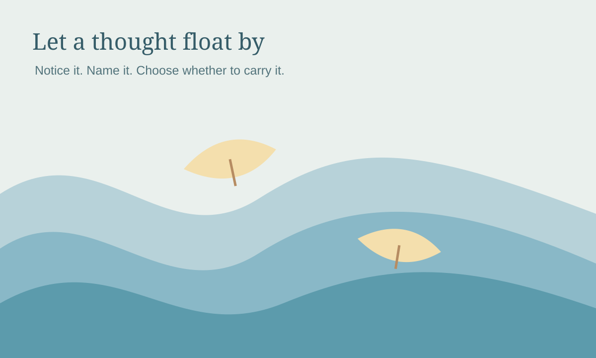

Healing Garden
A gentle garden metaphor for optional activity and personal reflection. No streaks, scores or performance tracking.
A quiet, accessible mental-wellbeing experience that lets people arrive without explaining everything, choose an optional next step, and connect with trustworthy human support.
These are concept assets, not screenshots of competitor websites. Use them as a starting point for an original visual system.

A gentle garden metaphor for optional activity and personal reflection. No streaks, scores or performance tracking.

A quiet environment with comfortable visual elements and visitor-controlled choices. Not a guarantee of physical safety.

A reflective metaphor for noticing thoughts and choosing whether to return to practical problem-solving.
Spacious layouts, readable typography, original illustration, visible service boundaries, reduced motion and mobile-first behaviour.
The platform is an information and help-navigation resource, not therapy, diagnosis or emergency response. Essential support routes must remain visible. A live peer community requires trained moderation, safeguarding, escalation and privacy operations before release.
See the main repository docs for the product blueprint, trauma-informed principles, women's-health content review requirements and QA gates.